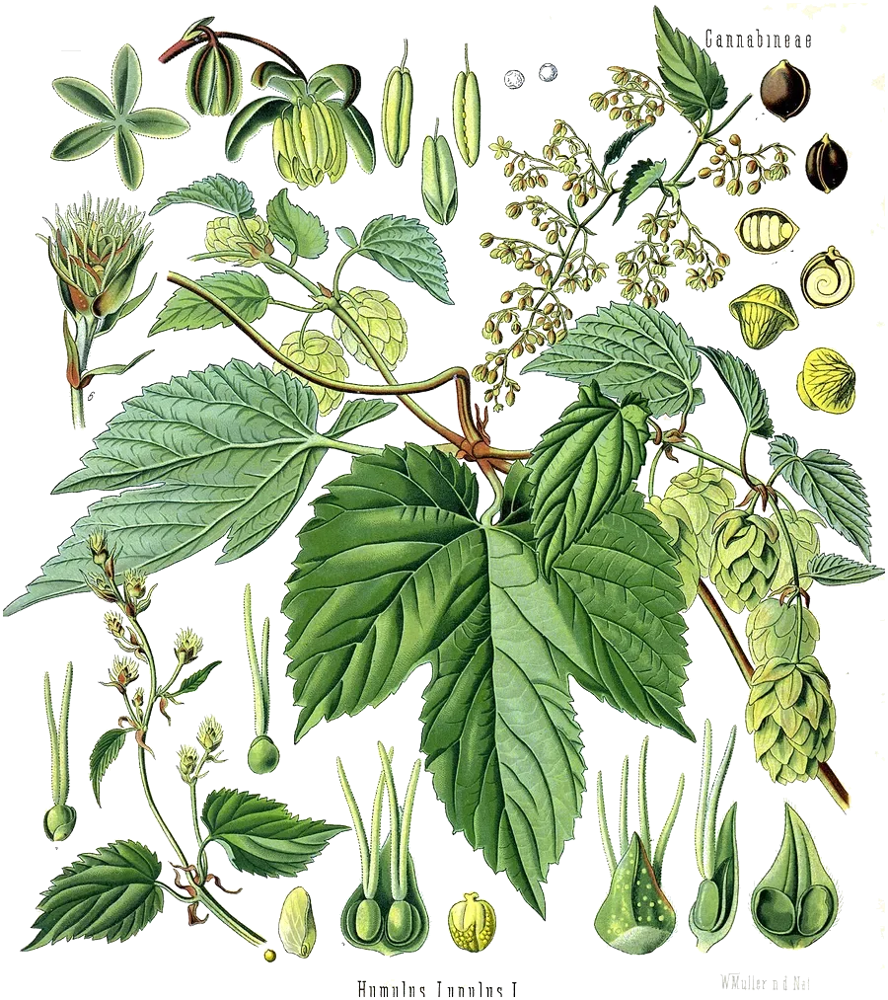

After Myrcia, a genus of the myrtle family. It has no ring. Its ten carbons form an open, branched chain with three double bonds: two isoprene units joined head to tail.
- Scent
- earthy, herbal, balsamic, hop-like, gently fruity Reference description: “pleasant; terpene odor” (HSDB)
- Found in
- hops, mango, lemongrass, thyme, bay laurel, basil, parsley, cardamom.
- In High Forest
- Soothing Berry Grounding Rest as a flavouring ingredient; amount not published
- Molar mass
- 136.23 g/mol
- Boiling point
- 166–167 °C JECFA
- CAS number
- 123-35-3
- FEMA number
- 2762
- Record
- PubChem 31253
- Systematic name
- 7-methyl-3-methylideneocta-1,6-diene
What has been studied highest rung: animals
- AnimalsIts sleepy reputation comes from rodents given large doses. A 2021 review found animal results for pain, inflammation and sedation, and no human studies.15
- SafetyIn a two-year study, male rats given very large amounts by stomach tube developed kidney tumours, and male mice liver tumours (US National Toxicology Program, 2010). The International Agency for Research on Cancer classed myrcene in 2019 as possibly carcinogenic to humans, group 2B.20 25
- SafetyIn 2018 the US FDA removed synthetic myrcene from its list of flavourings. The law requires this for any additive that causes cancer in animals at any dose; the FDA stated that it poses no risk to public health at the amounts used in food. Myrcene occurs naturally in hops, mango and thyme.21
- Not knownWhether it sedates people at all. No human trial exists.